La gastronomía boliviana combina ingredientes andinos, amazónicos y del valle,
creando sabores únicos que representan la diversidad cultural del país.
Cada departamento tiene recetas tradicionales transmitidas de generación en generación.
🏔 Plato Paceño
🎥 Video de preparación
🥔 Ingredientes del Plato Paceño
Carne de res
2 libras (o ½ kilo)
Choclo
4 choclos grandes y tiernos
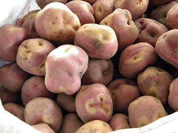
Papa imilla
4 libras
Habas verdes
1 libra, frescas con cáscara
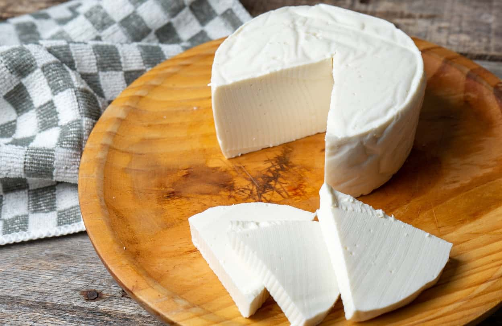
Queso criollo
1 queso mediano
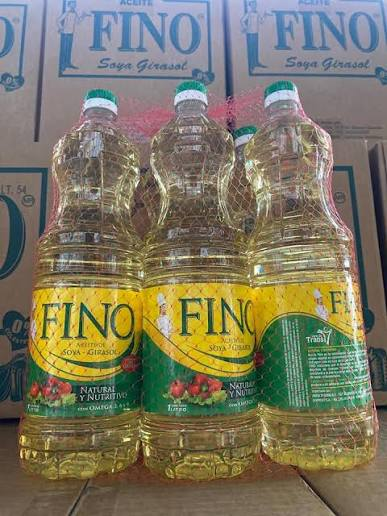
Aceite para freír
½ taza
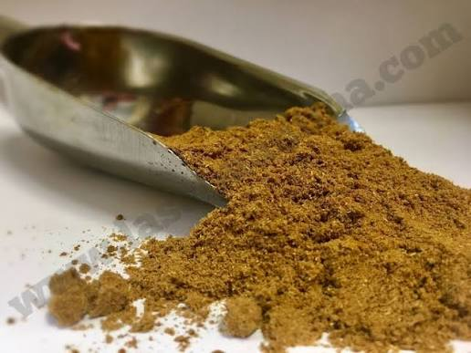
Comino molido
1 pizca
Pimienta negra
1 pizca
Aceite adicional
2 cucharadas
Salsa de soya
2 cucharadas adicionales
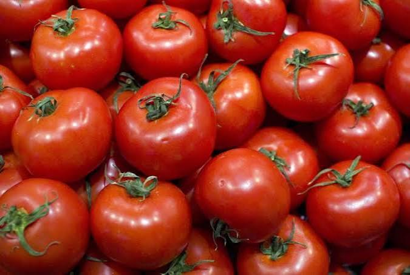
Tomate
1 tomate mediano y maduro
Locotos
5 locotos verdes o rojos
Quirquiña fresca
5 ramitas
Sal
1 pizca
👨🍳 Preparación
1. PREPARACION DEL CHOCLO: Quita los cabellos gruesos del choclo, Coloca los choclos en una olla profunda y cúbrelos con abundante agua fría, Pon la olla a fuego alto. Una vez que empiece a hervir, baja a fuego medio y cocina entre 25 a 35 minutos, hasta que los granos estén completamente tiernos.
2, PREPARACION DE LA PAPA: Lava muy bien las papas con agua corriente para eliminar toda la tierra, ya que se cocinan y sirven con su cáscara, pon las papas en una olla y cúbrelas con agua fría. Añade una cucharada de sal, cocina a fuego medio durante 20 a 30 minutos. Sabrás que están listas cuando las pinches con un cuchillo o tenedor y este entre con suavidad, o cuando la cáscara empiece a partirse ligeramente.
3. PREPARACION DE LA HABA: Lávalas bien. Se cocinan enteras, pero debes de cortar la parte superior e inferior de la haba para que lo del interior tenga una cocción perfecta y suave dentro de su vaina o cáscara verde. Colócalas en una olla con agua hirviendo y una pizca de sal. Déjalas hervir a fuego medio de 15 a 20 minutos. No te excedas de tiempo para que no se deshagan ni pierdan su color verde brillante.
4. PREPARACION DE LA CARNE: Condimenta los filetes de res con sal a gusto, una pisca depimienta, una pisca de comino, dos cucharillas de aceite, y dos cucharillas de salsa soya. Dejar reposar por 10 mn. para que agarre sabor. En una sartén con aceite bien caliente, fríe los filetes a fuego alto de 3 a 4 minutos por lado para sellar los jugos, logrando que queden dorados por fuera y blandos por dentro.
5. PREPARACION DEL QUESO: Corta el queso criollo en rebanadas rectangulares y gruesas (de aproximadamente 1.5 a 2 centímetros de espesor). Calienta media taza de aceite en una sartén a fuego medio-alto. Fríe las rebanadas de queso durante 1 a 2 minutos por lado, retirándolas apenas estén doradas y crujientes por fuera.
6. PREPARACION DE LA LLAJWUA: Tradicionalmente se muelen los ingredientes en un batán de piedra (o en su defecto, en una licuadora usando pulsos cortos).Proceso: Moler primero los locotos (con o sin semillas) junto con las hojas de quirquiña. Luego añade el tomate pelado y reduce todo a una salsa. Agrega sal al final.
📜 Historia
El Plato Paceño nació en La Paz durante el cerco de 1781, cuando la ciudad tuvo escasez de alimentos. Se preparó con productos del altiplano como papa, habas, choclo y queso. Con el paso del tiempo se convirtió en un plato tradicional y en un símbolo de la identidad y cultura paceña, representando la historia y las costumbres de la ciudad de La Paz.
⚒ Charquekan
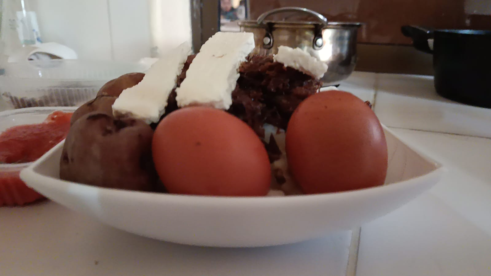
🎥 Video de preparación
🥩 Ingredientes del Charquekan
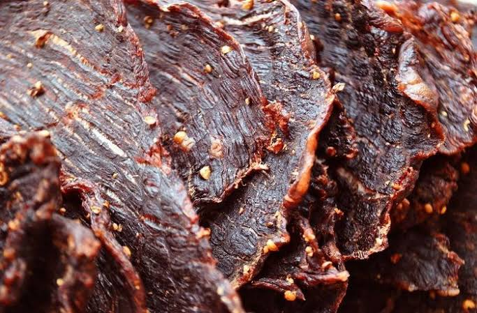
Charque
500 gramos
Mote de maíz
400 gramos
Papas
4 unidades (aproximadamente 400 g)
Queso criollo
200 gramos
Tomate
1 unidad
Locoto
1 unidad
Quirquiña
1 ramita
Aceite
Al gusto
Sal
Al gusto
👨🍳 Preparación
LAVAR Y PREPARAR EL CHARQUE: Primero debemos lavar el charque con abundante agua para retirar el exceso de sal. Después, lo colocamos en una olla con agua limpia para comenzar su cocción.
COCINAR EL CHARQUE: Luego debemos cocinar el charque en una olla con agua hasta que esté suave. Este proceso ayuda a que la carne sea más fácil de desmenuzar.
DESMENUZAR Y FREÍR EL CHARQUE: Una vez cocido, retiramos el charque del agua, lo dejamos enfriar un poco y lo desmenuzamos en trozos pequeños. Después, lo freímos en una sartén con un poco de aceite hasta que quede dorado y crocante.
COCINAR LAS PAPAS Y EL MOTE: Mientras se prepara el charque, debemos lavar las papas y cocinarlas en agua hasta que estén blandas. De la misma manera, cocinamos el mote hasta que esté bien suave
PREPARAR LOS HUEVOS Y EL QUESO: Después debemos preparar los huevos, generalmente fritos, y cortar el queso en porciones adecuadas para acompañar el plato.
SERVIR EL PLATO: Finalmente, colocamos el charque frito junto con las papas, el mote, el huevo y el queso. De esta manera obtenemos el plato de charque listo para servir.
📜 Historia
Bajo el sol radiante de Oruro, una cocinera estira hilos de carne de llama deshidratada para freírlos hasta que queden perfectamente crujientes. En la gran olla de barro, los granos de mote blanco y las papas nativas se cocinan al vapor, inundando la cocina con un aroma ancestral. Al emplatar, corona la preparación con un huevo duro y una generosa rebanada de queso criollo frito que se derrite lentamente. Los comensales se reúnen alrededor de la mesa, mezclando cada bocado con una cucharada de llajua picante que despierta los sentidos. Esta herencia de los arrieros andinos transforma ingredientes simples en un festín dorado que celebra la resistencia y el sabor del altiplano boliviano.
⚒ Kalapurka
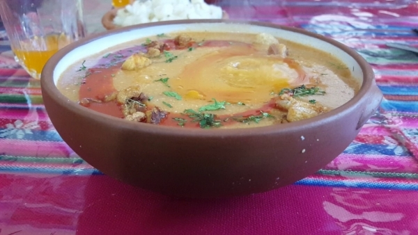
<
🎥 Video de preparación
🥘 Ingredientes de la Kalapurka
Carne de res
500 gramos
Harina de maíz
1 taza
Papas
4 unidades medianas
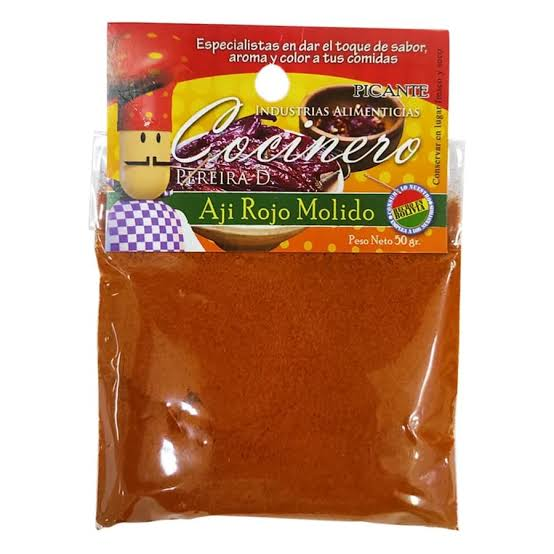
Ají colorado
3 cucharadas de ají molido
Cebolla
1 unidad grande
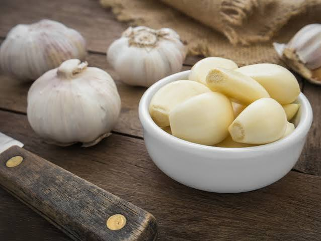
Ajo
2 dientes
Comino
½ cucharadita
Pimienta negra
Al gusto
Orégano
1 cucharadita
Aceite
2 cucharadas
Sal
Al gusto
Agua o caldo de carne
1½ a 2 litros aproximadamente
👨🍳 Preparación
1. Primero, lavar la carne de res y cortarla en trozos medianos. Colocarla en una olla con agua y sal, y cocinarla hasta que esté tierna. Reservar el caldo, ya que será la base de la sopa y le dará un sabor intenso.
2. Mientras se cocina la carne, lavar las papas, pelarlas y cortarlas en trozos. Cocinarlas en el caldo hasta que estén suaves, pero procurando que no se deshagan por completo.
3. Picar finamente la cebolla y el ajo. En una sartén, calentar un poco de aceite y sofreír la cebolla hasta que esté transparente. Después, agregar el ajo, el ají colorado, el comino, la pimienta y el orégano. Mezclar bien y cocinar durante unos minutos para que los condimentos desprendan su aroma.
4. Incorporar el ahogado de ají a la olla con el caldo y la carne. Remover suavemente para distribuir los sabores y dejar hervir a fuego medio durante unos minutos.
5. En un recipiente aparte, disolver la harina de maíz en agua fría, mezclando bien para evitar que se formen grumos. Añadir esta mezcla poco a poco a la olla, removiendo constantemente para que el caldo espese y adquiera una consistencia característica.
6. Dejar cocinar a fuego lento durante varios minutos, removiendo con frecuencia para evitar que la harina se pegue al fondo. Comprobar que la carne y las papas estén bien cocidas y que la sopa tenga una textura espesa y uniforme.
7. Probar la preparación y ajustar la sal y los condimentos si es necesario. La kalapurka debe quedar bien caliente, con un sabor intenso a carne y ají colorado.
8. Tradicionalmente, la kalapurka potosina se caracteriza por servirse muy caliente y, en algunas preparaciones, se introduce una piedra calentada al fuego dentro del recipiente para mantener la temperatura de la sopa. Esta técnica ancestral es una de las particularidades más representativas del plato.
9. Finalmente, servir la kalapurka en platos hondos y disfrutarla caliente. Es una comida tradicional de Potosí que destaca por su consistencia espesa, sus ingredientes andinos y su forma particular de preparación, relacionada con las costumbres culinarias de la región.
📜 Historia
Conversación en el Modo IA: dame una historia de 5 lineas del plato charquekanDijiste: dame una historia de 5 lineas del plato charquekandame una historia de 5 lineas del plato charquekanBajo el sol radiante de Oruro, una cocinera estira hilos de carne de llama deshidratada para freírlos hasta que queden perfectamente crujientes. En la gran olla de barro, los granos de mote blanco y las papas nativas se cocinan al vapor, inundando la cocina con un aroma ancestral. Al emplatar, corona la preparación con un huevo duro y una generosa rebanada de queso criollo frito que se derrite lentamente. Los comensales se reúnen alrededor de la mesa, mezclando cada bocado con una cucharada de llajua picante que despierta los sentidos. Esta herencia de los arrieros andinos transforma ingredientes simples en un festín dorado que celebra la resistencia y el sabor del altiplano boliviano.
⚒ Charquekan
🎥 Video de preparación
🥩 Ingredientes del Pique Macho
Salchicha o chorizo
Al gusto
Papas
1 arroba
Carne de res
Cantidad necesaria
Huevos
2 o 3 unidades
Queso
1 queso entero
Tomates
3 unidades
Cebolla
1 unidad
Locoto
Picado en rodajas
Pimienta
Al gusto
Ají
Al gusto
Sal
Al gusto
Salsa soya
Al gusto
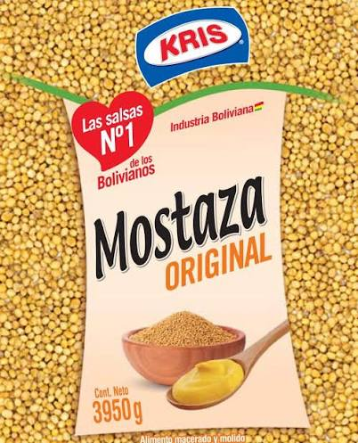
Mostaza
Al gusto
👨🍳 Preparación
1. PREPARACION DE DE LA CARNE : Se debe cortar la carne de res en cubos pequeños de tamaño bocado, una ves cortado se debe marinar o sasonar en un recipiente con el ajo molido, comino, la pimienta, la salsa soya y la sal al gusto
2. PREPARACION DE LA PAPA : Como segundo paso paso lavamos la papa y procedemos a pelarla, una vez acabdo de pelar la papa se debe cortar en forma de bastones no tan gruesos ni tan delagados, una vez hecho eso una sarten honda colocaruna cantidad de aceite mediana para que las papas se dores y salgan crocantes. se recomienda ver el paso 3 primero
3. PREPARACION DE LA SALCHICHA O CHORIZO : Se debe cortar la salchicha o chorizo en un corte diagonal no debe de ser delgado debe tener un grosor tipo bocado se debe dorar en una sarten, dejarlo a fuego medio para que se dore ligeramente, es recomendable hacer el paso 3 al mismo tiempo que el paso 2
4. COCCION DE LA CARNE DE RES : En una sarten hechar un choro de aceite y posterior a eso colocar la carne que se dejo marinando con las especias, cellas la carne para que no se escape el juego y el sabor, una vez que la carne suelte su jugo agregar la salchicha dorada y dejar cocer por 5minutos.
5. PREPARACION DE LOS HUEVOS Y EL QUESO : En una holla se debe llenar de agua hasta la mitad y se debe colocar los huevos con su cascara, se debe dejar herbir por almenos 10mn. , se debe de labar muy bien el queso y cortar en forma vertical
6. EMPLATADO : En un plato colocar primero las papas rodadas luego se debe colocar la preparacion que hizimos de la carne y lo decoramos con queso y rodasjas de tomate y tambien el huevo y como no unas rodajas de locoto y cebolla
📜 Historia
El pique macho nació en Cochabamba, Bolivia, en la década de 1970 en el restaurante de Honorato Quiñones y Evangelina Rojas.Una noche, un grupo de pilotos llegó al local de madrugada buscando algo de comer cuando la cocina ya estaba cerrada. Doña Evangelina, usando lo último que le quedaba en la despensa, picó y mezcló carne, salchichas, papas fritas y abundante locoto picante.Al verlos sudar por el picor, los dueños los desafiaron diciendo: "Piquen si son machos". El plato fue un éxito rotundo y el nombre se quedó para siempre, convirtiéndose en un ícono de la comida boliviana.
⚒ Charquekan
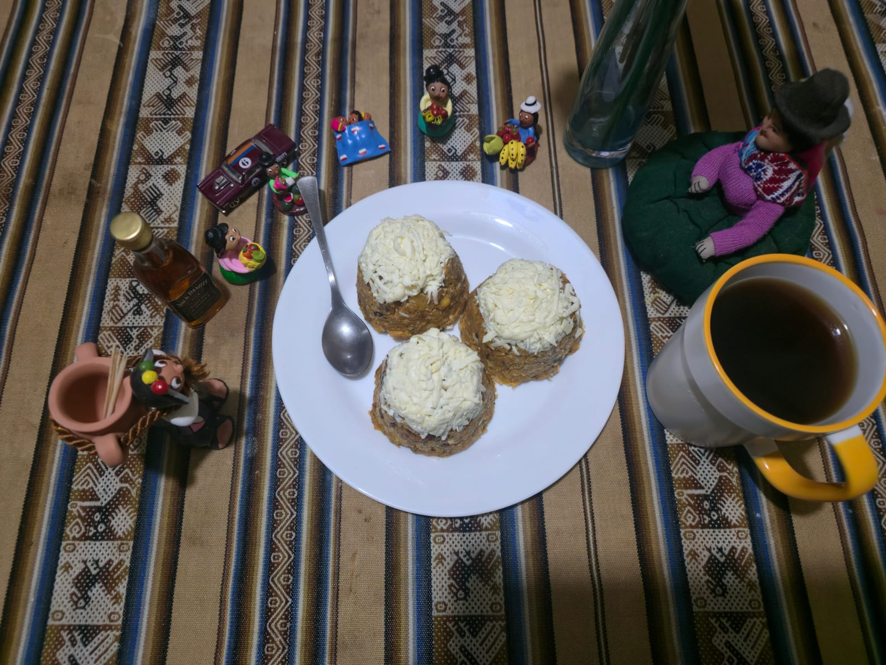
🎥 Video de preparación
🍌 Ingredientes del Masaco de Plátano
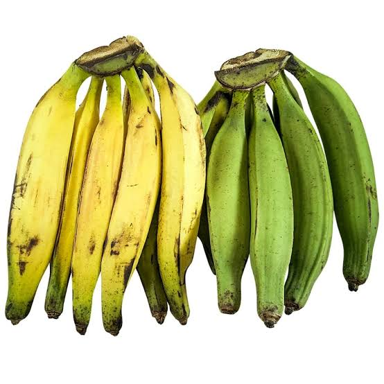
Plátanos verdes
4 unidades
Cebolla
1 unidad
Aceite
2 cucharadas
Sal
Al gusto
Agua
Cantidad necesaria
Queso
1 unidad
👨🍳 Preparación
LAVAR Y PREPARAR LOS INGREDIENTES: Primero debemos lavar los plátanos y la carne. Luego pelamos los plátanos y cortamos la carne en trozos pequeños para facilitar su preparación.
PREPARAR LOS PLÁTANOS: Pelamos los plátanos verdes y los cortamos en trozos medianos. Luego los cocinamos o freímos hasta que estén blandos y puedan ser machacados fácilmente.
MACHACAR LOS PLÁTANOS: Colocamos los plátanos cocidos o fritos en un recipiente y los machacamos con un utensilio hasta obtener una mezcla uniforme. Agregamos un poco de sal al gusto.
MEZCLAR LOS INGREDIENTES: fritamos los plátanos machacados.
DAR FORMA Y SERVIR: Finalmente, formamos el masaco en porciones y lo servimos caliente. Podemos acompañarlo con otros alimentos según la preparación tradicional de la región.
📜 Historia
En las cálidas tierras de Santa Cruz, el aroma del charque tostado anuncia que el majadito cruceño está listo para cobrar vida en el perol. El arroz se tiñe de un dorado brillante gracias al urucú, mezclándose con el plátano de freír maduro que aporta su dulzura tropical. Sobre esta base perfecta, se acomoda un huevo frito de yema blanda y una porción de carne perfectamente machacada y crujiente. Cada cucharada combina la textura suave del grano con el toque crujiente y saladito de la res, creando una fiesta de sabores orientales. Es el alma de la gastronomía del oriente boliviano, un plato generoso que une a las familias en cada rincón del camba.
⚒ Majadito beniano
🎥 Video de preparación
🥘 Ingredientes del Majadito Beniano
Arroz
2 tazas
Charque de res
500 gramos
Cebolla
1 unidad grande
Tomate
2 unidades medianas
Pimentón
1 unidad
Ajo
2 dientes
Aceite
3 cucharadas
Sal
Al gusto
Pimienta negra
Al gusto
Huevos
4 unidades
Plátanos maduros
2 unidades, para acompañar
👨🍳 Preparación
1. Primero, lavar el charque para retirar el exceso de sal. Colocarlo en una olla con agua y cocinarlo hasta que esté suave. Una vez listo, retirarlo, dejarlo enfriar un poco y desmenuzarlo en trozos pequeños. Reservar el caldo de cocción para utilizarlo más adelante.
2. Lavar y picar finamente la cebolla, los tomates, el pimentón y los dientes de ajo. Estos ingredientes servirán para preparar el ahogado, que aportará sabor y color al arroz.
3. En una olla grande, calentar el aceite y sofreír la cebolla hasta que esté transparente. Agregar el ajo, el tomate y el pimentón. Cocinar durante unos minutos, removiendo para que las verduras se mezclen y formen una salsa.
4. Incorporar el charque desmenuzado y mezclarlo con el ahogado. Añadir el urucú o colorante natural, la pimienta y una pequeña cantidad de sal si es necesario, teniendo en cuenta que el charque puede ser salado.
5. Agregar el arroz previamente lavado y mezclarlo con la carne y los condimentos. Después, incorporar aproximadamente cuatro tazas de caldo reservado o agua caliente, ajustando la cantidad según el tipo de arroz y la consistencia deseada.
6. Cocinar a fuego medio hasta que el líquido comience a reducirse. Luego, bajar el fuego, tapar la olla y dejar que el arroz se cocine lentamente hasta que esté suave y haya absorbido el líquido. Remover ocasionalmente con cuidado para evitar que se pegue al fondo.
7. Mientras se termina de cocinar el arroz, freír los huevos en una sartén. También pelar los plátanos maduros, cortarlos en rodajas y freírlos hasta que estén dorados por ambos lados.
8. Cuando el arroz esté cocido, probar y corregir la sazón si hace falta. El majadito debe quedar jugoso y bien mezclado con el charque, con un color característico y un aroma agradable.
9. Finalmente, servir el majadito caliente y acompañarlo con un huevo frito y rodajas de plátano maduro. Estos acompañamientos complementan el sabor del arroz y la carne, haciendo que el plato sea más completo.
10. El majadito es una preparación tradicional de los llanos orientales de Bolivia, especialmente conocida en el Beni y Santa Cruz. Se caracteriza por combinar arroz con charque o carne, condimentos y acompañamientos como huevo y plátano frito. Su sabor representa parte de la riqueza gastronómica y cultural de la región.
📜 Historia
El charquekan es un plato tradicional de Oruro preparado principalmente con charque de llama. Es parte de la gastronomía tradicional del departamento y se caracteriza por combinar carne deshidratada con papa, mote, huevo y queso.
⚒ Sudado de surubi
🎥 Video de preparación
🥘 Ingredientes del Sudado de Surubí
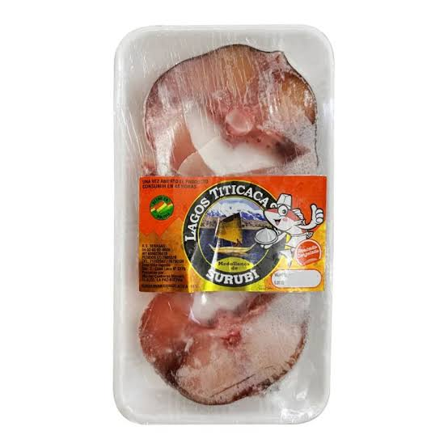
Surubí
1 kilogramo de pescado en presas o filetes
Cebolla
2 unidades medianas
Tomate
3 unidades maduras
Pimentón
1 unidad mediana
Ajo
2 o 3 dientes
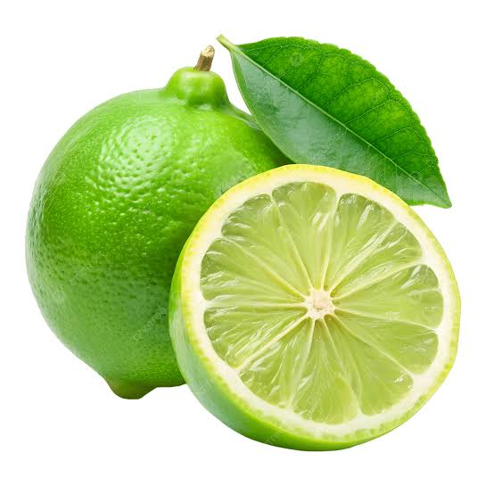
Limón
1 unidad para sazonar el pescado
Aceite
2 cucharadas
Comino
½ cucharadita
Pimienta negra
Al gusto
Sal
Al gusto
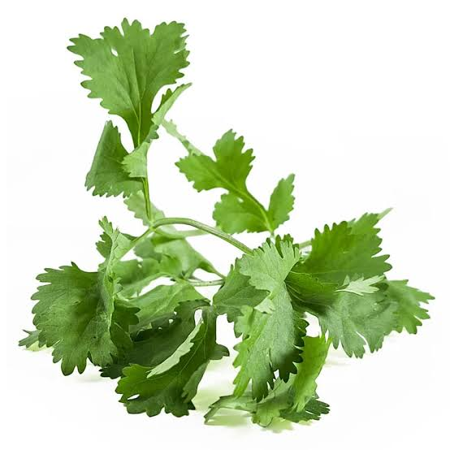
Cilantro o perejil
Un pequeño manojo picado
Agua o caldo de pescado
2 tazas aproximadamente
👨🍳 Preparación
1. Primero, lavar cuidadosamente las presas o filetes de surubí. Sazonarlos con sal, pimienta y un poco de jugo de limón. Dejarlos reposar durante unos minutos para que absorban el sabor de los condimentos.
2. Lavar y picar finamente la cebolla, el tomate, el pimentón y los dientes de ajo. Estos ingredientes serán la base de la salsa que dará sabor al pescado.
3. En una olla amplia, calentar el aceite y sofreír la cebolla hasta que esté transparente. Después, agregar el ajo picado y el pimentón, mezclando bien para que desprendan su aroma.
4. Incorporar los tomates picados y cocinar durante varios minutos, removiendo ocasionalmente hasta que se ablanden y formen una salsa jugosa. Añadir el comino, la pimienta y la sal al gusto.
5. Agregar aproximadamente dos tazas de agua o caldo de pescado a la preparación. Mezclar suavemente y dejar hervir unos minutos para que los sabores de las verduras y los condimentos se integren.
6. Colocar las presas de surubí dentro de la salsa, procurando que queden parcialmente cubiertas por el líquido. Tapar la olla y cocinar a fuego medio-bajo durante unos 15 a 20 minutos, dependiendo del grosor de las presas, hasta que el pescado esté completamente cocido. Evitar remover demasiado para que no se deshaga.
7. Cuando el pescado esté listo, probar la salsa y corregir la sal si es necesario. Agregar cilantro o perejil picado para aportar frescura y aroma al plato.
8. Finalmente, servir el sudado de surubí bien caliente, acompañado de arroz blanco, yuca cocida o plátano, según la costumbre familiar. Se puede añadir un poco de la salsa sobre el pescado para conservar su jugosidad y resaltar su sabor.
9. El sudado de surubí es una preparación de pescado de agua dulce que destaca por su sabor suave y su salsa elaborada con verduras y condimentos. Este plato refleja la riqueza de los ríos y la tradición gastronómica de la región amazónica boliviana, especialmente de Pando, donde el pescado forma parte de la alimentación de muchas familias.
📜 Historia
El charquekan es un plato tradicional de Oruro preparado principalmente con charque de llama. Es parte de la gastronomía tradicional del departamento y se caracteriza por combinar carne deshidratada con papa, mote, huevo y queso.
⚒ Saice Tarijeño
🎥 Video de preparación
🍲 Ingredientes del Saice Tarijeño
Carne de res
Blanda, picada o molida
Papas
Cantidad necesaria
Arvejas
Cantidad necesaria
Cebollas
Cantidad necesaria
Tomates
Cantidad necesaria
Ají colorado en vaina
Seco
Dientes de ajo
Cantidad necesaria
Arroz
Cantidad necesaria
Huevo
Cantidad necesaria
Aceite vegetal
Cantidad necesaria
Comino
Al gusto
Pimienta entera o molida
Al gusto
Sal
Al gusto
👨🍳 Preparación
1. Primero, lavar y preparar la carne de res. Cortarla en trozos pequeños o molerla, según la forma tradicional de preparación. Picar finamente la cebolla, el ajo, el tomate y el locoto para utilizarlos en el ahogado.
2. En una olla, calentar un poco de aceite y sofreír la cebolla hasta que esté transparente. Después, agregar el ajo picado y cocinar durante unos minutos para que suelten su aroma y sabor.
3. Incorporar el tomate picado y el locoto, mezclando bien todos los ingredientes. Añadir el comino, la pimienta, el ají colorado si se desea y la sal al gusto. Dejar cocinar hasta obtener una salsa espesa y sabrosa.
4. Agregar la carne de res a la preparación y mezclarla con el ahogado. Cocinar a fuego medio, removiendo de vez en cuando para que la carne se dore ligeramente y absorba el sabor de los condimentos.
5. Añadir un poco de agua o caldo si es necesario y dejar cocinar a fuego lento hasta que la carne esté bien cocida y la salsa tenga una consistencia jugosa. Probar y ajustar la sal y los condimentos según el gusto.
6. Mientras se termina de cocinar la carne, lavar y cocinar las papas en otra olla con agua hasta que estén suaves. Después, escurrirlas y reservarlas para acompañar el plato.
7. Finalmente, servir el saice tarijeño caliente, colocando una porción generosa de la preparación de carne con su salsa y acompañándola con papas cocidas. También se puede agregar arroz, ensalada y una pequeña porción de ají de acuerdo con la costumbre de cada familia.
8. El saice tarijeño es uno de los platos más representativos de Tarija, Bolivia. Se caracteriza por su carne preparada con cebolla, tomate y condimentos, que le dan un sabor intenso y casero. Su combinación de ingredientes refleja la tradición gastronómica tarijeña y lo convierte en una comida ideal para compartir en familia.
📜 Historia
El charquekan es un plato tradicional de Oruro preparado principalmente con charque de llama. Es parte de la gastronomía tradicional del departamento y se caracteriza por combinar carne deshidratada con papa, mote, huevo y queso.
⚒ Mondongo Chuquisaqueño
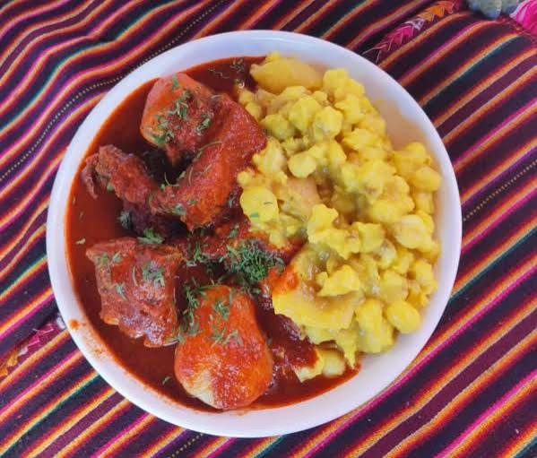
🎥 Video de preparación
🍲 Ingredientes del Mondongo Chuquisaqueño
Carne de cerdo
1 kilo, preferiblemente con cuero
Ají colorado molido
½ taza
Papas
6 papas medianas
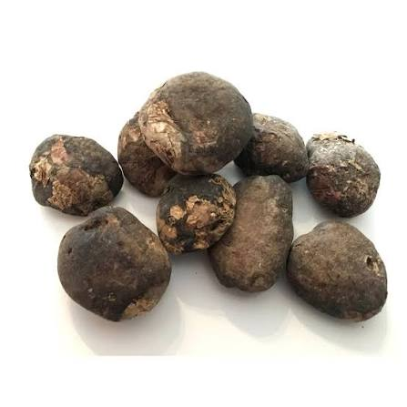
Chuño
½ kilo
Cebolla
2 cebollas medianas
Tomate
2 tomates medianos
Ajo
2 dientes
Comino
½ cucharadita
Pimienta negra
Al gusto
Orégano
1 cucharadita
Aceite
3 cucharadas
Sal
Al gusto
Pan molido
Opcional, para espesar la salsa
👨🍳 Preparación
1. Primero, lavar y limpiar bien la carne de cerdo. Cortarla en trozos medianos y cocinarla en una olla con agua y sal hasta que esté tierna. Reservar un poco del caldo para utilizarlo en la preparación de la salsa.
2. Mientras se cocina la carne, preparar el ají colorado. Retirar las semillas y las venas de los ajíes si se desea reducir el picante, hidratarlos en agua caliente y molerlos hasta obtener una pasta.
3. Picar finamente la cebolla y el ajo. Freírlos en una olla con un poco de aceite hasta que la cebolla esté transparente. Luego, agregar el ají colorado molido, el comino, la pimienta, el orégano y la sal al gusto.
4. Incorporar la carne de cerdo cocida a la preparación del ají. Añadir un poco del caldo reservado y dejar cocinar a fuego lento para que la carne absorba el sabor de los condimentos y la salsa espese.
5. En otra olla, cocinar el mote de maíz hasta que esté suave. Si se utiliza mote previamente cocido, solamente será necesario calentarlo. También lavar las papas y hervirlas en agua con sal hasta que estén blandas, pero sin que se deshagan.
6. Cuando todos los ingredientes estén listos, colocar el mote y las papas en los platos. Añadir encima la carne de cerdo con abundante salsa de ají colorado, procurando distribuir bien los ingredientes.
7. Finalmente, servir el mondongo bien caliente. Este plato tradicional de Chuquisaca se caracteriza por la combinación de la carne de cerdo, el intenso sabor del ají colorado y el acompañamiento del mote y las papas, que juntos le dan su sabor y apariencia característicos.
📜 Historia
El charquekan es un plato tradicional de Oruro preparado principalmente con charque de llama. Es parte de la gastronomía tradicional del departamento y se caracteriza por combinar carne deshidratada con papa, mote, huevo y queso.